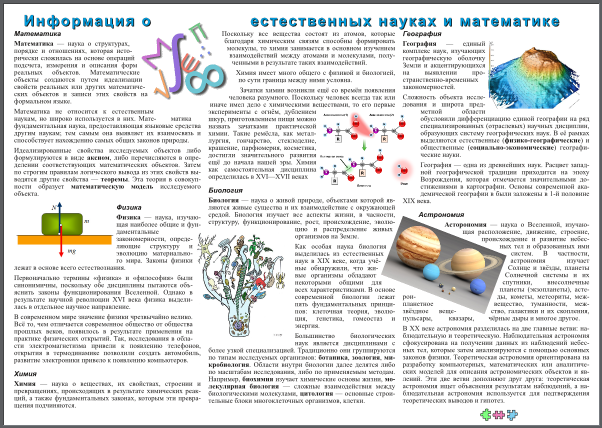
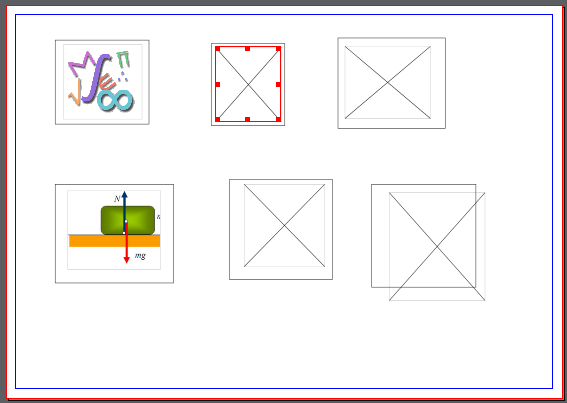

Практическое введение в Scribus
Допустим, вас попросили создать небольшой информационный плакат размером A3 (это как два листа по A4) на какую-либо тему.
Первое, что вам следует сделать, это продумать, какую именно информацию вы будете размещать, ее объем, расположение, также необходимо подобрать или создать изображения. В данном случае за вас все сделано. В архиве вы найдете документ odt с текстом и файлы картинок (материал взят из Википедии). Текст отформатирован, в нем есть заголовки 1-го и 2-го уровня.
В результате выполнения данного урока у вас должно получить примерно следующее:

Запустите Scribus, в диалоговом окне "Новый документ" установите следующие параметры:
После этого будет создана страница с текстовым блоком, состоящим из трех столбцов.
Добавим текст из файла odt.
Выделите текстовый блок и нажмите Ctrl + I (или в контекстное меню выберите пункт "Получить текст"). Загрузите содержимое файла odt, при этом обратите внимание, фильтр импорта должен быть в состоянии "Автоматически".
В появившемся окне "Параметры импорта OpenDocument" снимите флажок "Добавить название документа в начало абзацного стиля".
Загруженный таким образом текст "разольется" по трем столбцам, однако не займет их полностью. И это хорошо, ведь придется вставлять еще картинки.
Стили, примененные в LibreOffice (OpenOffice) к тексту, были также импортированы в Scribus. Позже мы их немного подправим, а пока вынесем главный заголовок в отдельный текстовый блок.
Создайте узкий текстовый блок (T) в верхней части страницы на всю ее ширину (поля не трогать). Этот блок перекроет основной текстовый блок.
Вызовите окно свойств (F2) и включите у второго текстового блока обтекание по очертаниям блока (вкладка "Фигура").
Вырежьте заголовок "Информация о естественных науках и математике" из первого текстового блока и вставьте во второй. Обратите внимание, надо удалить оставшийся пустой абзац перед заголовком "Математика".
Теперь исправим стили, которые были загружены вместе с текстом. В окне стилей (F3) должны уже быть следующие:
Измените для Heading_20_1 следующие свойства:
Для Title установите расстояние перед и после абзаца по 5 pt.
Для Text_20_body:
Чтобы текст смотрелся аккуратней вставьте переносы: Расширения → Вставить переносы.
В Scribus есть возможность работать со слоями, как во многих графических редакторах. Чтобы открыть окно "Слои" необходимо выполнить команду Окна → Слои (F6). Поместим изображения на отдельный слой.
Откройте окно "Слои", переименуем существующий слой "Фон" в "Текст" (двойной клик по слову).
Добавьте новый слой (кнопка со знаком "+") и назовите его "Рисунки", он должен быть выше "Текста".
Для слоя "Текст" включите флажок под замком и выключите под глазом.
Теперь текст не будет мешать предварительной работе с изображениями.
Текст будет обтекать изображения по их контуру. Однако между текстом и изображением должны быть небольшие поля. Если бы мы заранее знали, сколько места будет занимать каждое изображение на плакате, то могли бы откорректировать их размер до вставки в публикацию. В таком случае не пришлось бы вписывать изображение в блок. А если его туда не вписывать, то можно задать отступы от краев блока до изображения, сделав блок чуть больше, чем изображение. Но мы пойдем иным путем.
Разместите на холсте шесть прямоугольников (S), потом шесть блоков изображений (I). Вставьте изображения в блоки (Ctrl + I) и "впишите" их туда.
Подкорректируйте прямоугольники так, чтобы они описывали блоки изображений, но были чуть больше их.
Сгруппируйте каждый прямоугольник с его изображением. Для этого следует выделить пару и выполнить команду Объект → Сгруппировать (Ctrl + G).
Уберите черные рамки прямоугольников. Делается это на вкладке "Цвет" окна свойств (F2): для цвета обводки надо установить значение "Нет".

В окне "Слои" (F6) для слоя "Текст" установите флажок под глазом и снимите с замка. Закройте окно "Слои".
Для переключения между слоями есть соответствующий выпадающий список внизу окна Scribus.
Изображения будут перекрывать текст. Для того чтобы они его обтекали, необходимо на вкладке "Группа объектов" окна свойств (F2) выбрать обтекание по очертаниям блока.
Установите обтекание текстом для групп с картинками.
Ну и наконец начинается творческий процесс, который не так прост как кажется на первый взгляд. Надо разместить изображения в тексте так, чтобы все выглядело аккуратно и продумано. Изображения можно поворачивать, изменять размер. Желательно добавить какие-нибудь декоративные элементы на страницу, например небольшие фигуры из коллекции Scribus.
Может так случиться, что текст выйдет за границы блока. В таком случае вы увидите в нижнем правом углу текстового блока соответствующую метку. Если это так, то можно изображения сделать еще меньше, подкорректировать стиль абзаца, например, немного уменьшить интерлиньяж.
Сам документ Scribus (с расширением *.sla) вы должны были сохранить в самом начале.
Укажите информацию о документе (Файл → Параметры документа → Информация о документе).
Экспортируй документ в формат pdf (Файл → Экспортировать → Сохранить как PDF, или на панели есть соответствующая кнопка). В появившемся окне "Допечатная проверка" нажмите кнопку "Игнорировать ошибки".
Посмотрите, что у вас получилось с помощью любой программы для просмотра pdf-документов.
| Прикрепленный файл | Размер |
|---|---|
| poster.zip | 1.9 Мб |